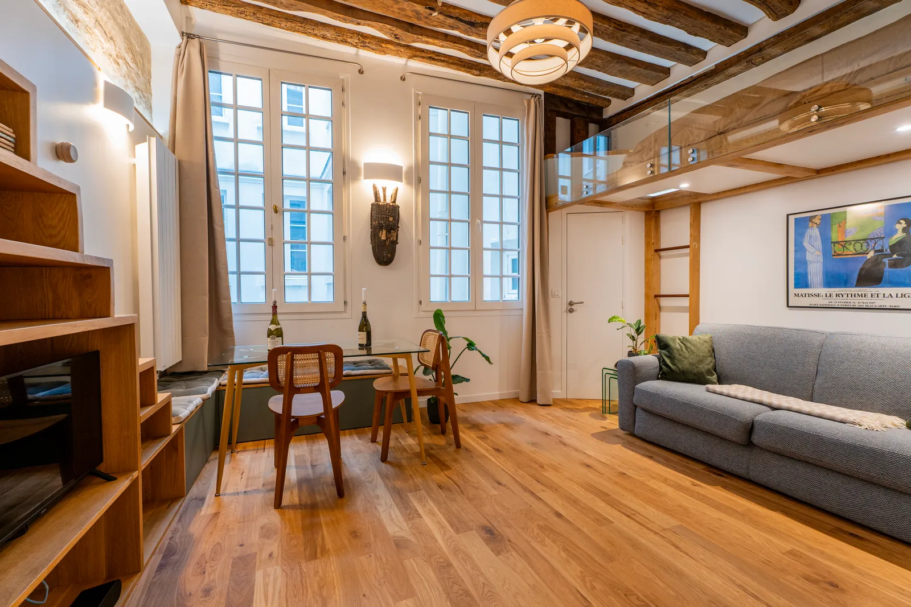

Stouls Studio / Portfolio
Portfolio of Margaux Stouls
9 projects, each on its own page: full renovations first, then partial renovations, then furniture made to measure.
Full renovations
 Main residence
Main residenceApartment, Paris 9th

Rental investment, 24 m²Studio Mazarine, Paris 6th
 Rental property, 26 m²
Rental property, 26 m²Top-floor studio, Saint-Germain-des-Prés
 Main residence, 26 m²
Main residence, 26 m²Apartment, Montmartre
 Bought, renovated and resold, 55 m²
Bought, renovated and resold, 55 m²Apartment, Levallois-Perret
 Second home, 130 m²
Second home, 130 m²Country house, Burgundy
 Holiday house, 150 m²
Holiday house, 150 m²House on Sifnos
Partial renovations

Custom-made furniture
Furniture drawn for one room and made by cabinetmakers. Here, a sideboard and shelves on turned oak posts, and a round dining table in stained oak.


3D visualisations
Before work starts, the rooms are modelled in three dimensions. A client abroad sees the result on screen and can change it while changing still costs nothing.


Technical drawings
The drawings contractors build from. Here, dimensioned elevations of a kitchen wall and its island, with every material and fitting noted.


Your project
Tell Margaux what you are looking for in Paris, or send the listing of an apartment you are considering.
More work is on Instagram @stouls_studio.